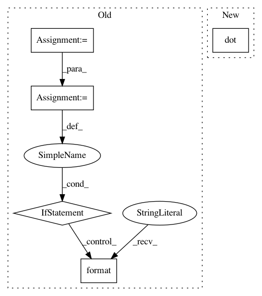

53753337fc53532e2c35ed70c49fef23aa0510f4,tests/test_special_orthogonal_group.py,TestSpecialOrthogonalGroupMethods,test_exp_then_log,#TestSpecialOrthogonalGroupMethods#,380
Before Change
result = helper.exp_then_log(metric=metric,
tangent_vec=point,
base_point=base_point)
expected = point
inv_expected = - expected
self.assertTrue((np.allclose(result, expected)
or np.allclose(result, inv_expected)),
"\nmetric {}:\n"
"- on point {}: {} -> {}\n"
"- base_point {}: {} -> {}\n"
"result = {} -> {}\n"
"expected = {} -> {}".format(
metric_type,
angle_type,
point, self.group.regularize(point),
angle_type_base,
base_point, self.group.regularize(base_point),
result, self.group.regularize(result),
expected, self.group.regularize(expected)))
if np.allclose(result, inv_expected):
if np.linalg.norm(inv_expected - expected) > 1e-5:
logging.warning("Test exp_then_log passed only "
" w. the assumption:\n"
" rotvec = -rotvec "
"for a point {} "
"and base_point {}.".format(
angle_type,
angle_type_base))
def test_log_then_exp(self):
This tests that the composition of
log and exp gives identity.
After Change
tangent_vec)
tangent_vec_at_id = self.group.regularize(
tangent_vec_at_id)
expected = np.dot(jacobian, tangent_vec_at_id)
self.assertTrue(np.allclose(result, expected, atol=1e-6),
"\nmetric {}:\n"
"- on point {}: {} -> {}\n"
In pattern: SUPERPATTERN
Frequency: 3
Non-data size: 5
Instances
Project Name: geomstats/geomstats
Commit Name: 53753337fc53532e2c35ed70c49fef23aa0510f4
Time: 2018-01-28
Author: ninamio78@gmail.com
File Name: tests/test_special_orthogonal_group.py
Class Name: TestSpecialOrthogonalGroupMethods
Method Name: test_exp_then_log
Project Name: geomstats/geomstats
Commit Name: 53753337fc53532e2c35ed70c49fef23aa0510f4
Time: 2018-01-28
Author: ninamio78@gmail.com
File Name: tests/test_special_orthogonal_group.py
Class Name: TestSpecialOrthogonalGroupMethods
Method Name: test_group_exp_then_log
Project Name: pymc-devs/pymc3
Commit Name: 2f5075be900731232fa6b4bd5a4990b143307df2
Time: 2017-04-18
Author: ColCarroll@users.noreply.github.com
File Name: pymc3/tests/test_step.py
Class Name: TestStepMethods
Method Name: check_trace